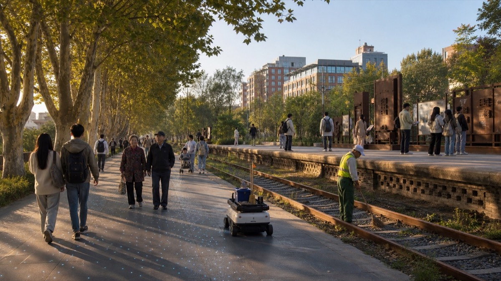
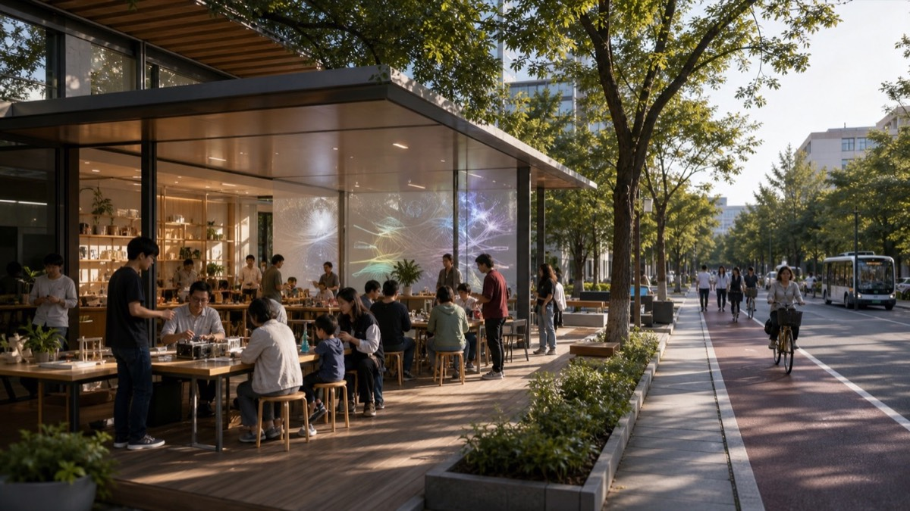
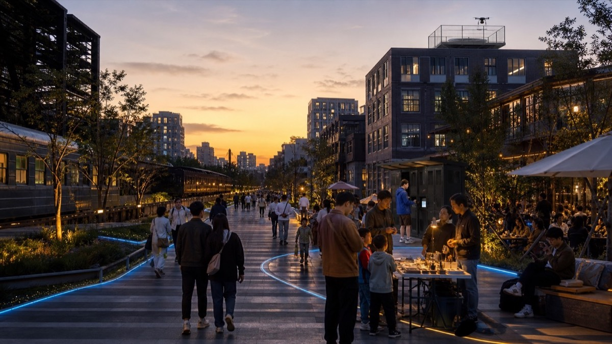

Trusted-AI testing garden: public contribution wall, observable pilots and human review.
Spatial proposition
The dashed perimeter is a working constraint from the public package, not an official boundary or statutory redline. Formal calculations and professional scoring must be rerun when official polygons are issued.

Three anchors, one civic loop
Open-source conversion commons: research exchange, shared devices and accountable enterprise service.
Heritage gateway and city showcase: slow cultural route, accessible civic interface and event forecourt.
Resonance Protocol: three segments, four public gates
The project now uses a reviewable sequence: understandable, voluntary, capable of human takeover and open to public review. It is a conceptual responsibility framework, not an approval process.
At Zhongzhiyuan, a shared testing court retains staffed advice, printed notices and manual booking. The minimum public record is scope, incident response, responsible role and withdrawal route.
At AI Origin, a no-login public front desk joins campus-edge walking, contribution release and result consultation. Every display needs consent, attribution, feedback and withdrawal.
At Dazhongsi, crossing, shade, seating, lighting and static wayfinding come first. Human assistance replaces digital prompts for crowding, misleading information, access failure or privacy concern.
Services may return to an earlier segment for revision or stop after feedback. The machine-readable concept record is local: visual/assets/resonance-protocol.json; it contains no personal, real-time or engineering-control data.
First-use cards and delivery gates
Education, health, commerce, energy, walking and park maintenance now each have a person, non-AI baseline, accountable role, public evidence and stop condition.
Check site/data prerequisites, public value, rights and accessible alternatives before moving beyond desktop study.
Check human takeover, operating responsibility and independent expansion review. A failed gate means revision, hold or exit.
See local audit files: visual/assets/scenario-persona-matrix.json and visual/assets/implementation-gates.json.
Everyday intelligence, kept in proportion
These are conceptual renderings, not approved projects. Each image keeps people, public space and a staffed non-digital alternative in the foreground; automation operates as a bounded supporting service.

Heritage-park maintenanceOne small ground robot assists a human maintenance crew beside the retained rail trace.

Learning and transferA low-speed autonomous shuttle stops only in a separated curb bay; the workshop remains human-led.

Controlled last-mile serviceA single drone serves a distant controlled pad rather than operating above the public promenade.
Evidence and safeguards
Working site area11.41 km²medium-confidence provisional calculation
AI+ pilot principleHuman reviewconsent, minimisation, logs and reversibility
Delivery sequenceObserve → pilot → reviewexpand only after independent assessment
Source, assumptions, metrics, geometry and compliance evidence are packaged locally in sources.json, assumptions.json, metrics.json and the three matrices. This page uses no remote assets, APIs or map tiles.